Le saut
La méthode classique : retomber sur un ennemi pour l'éliminer. Rien à dépenser, rien à viser — mais le Lourd et le Lanceur, eux, ne s'écrasent pas.
IMAGINe Studio Engine HwR · Prototype 06
Un jeu de plateforme en 2D. Un monde parallèle. Dix niveaux, des Serra à écraser, une monnaie à dépenser et une machine bavarde qui commente chacun de vos achats.
Bêta 27 au 29 nov. 2026 Sortie 9 janvier 2027
Brad Bitt n'a pas suivi sa formation à Basic Fit pour rien.
Il saute, il court, il frappe —
et il a une revanche à prendre.
L'histoire
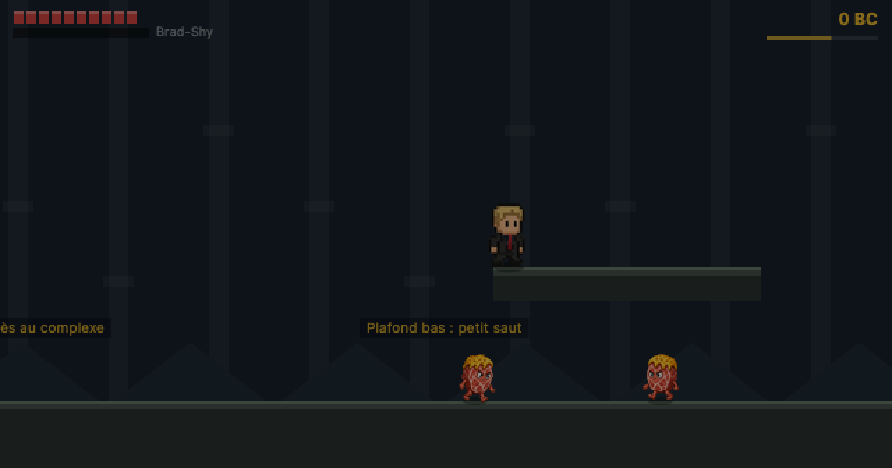
Complexe — niveau −2Brad se met en chasse. Sa piste le conduit dans un monde parallèle — celui où se cache Kirby67.
Hors introduction et combat final, dix niveaux séparent Brad de sa cible. Chacun avec sa particularité, son décor et sa musique.
Tous les trois niveaux, un objet livre un morceau de piste. Réunis, ils donnent les coordonnées exactes de Kirby67.
Un affrontement sans pitié, des retournements de situation — et, après les crédits, un teaser pour Brad Bitt, The Last Dance.
Le mouvement
Zéro temps mort. Repos, marche, course. Brad reste contrôlable en l'air, avec une inertie plus faible qu'au sol. Le saut se module : plus la touche est maintenue, plus il monte.
AZERTY et QWERTY sont pris en charge sans configuration. Sur téléphone, les boutons tactiles n'apparaissent que pendant le jeu.
Le combat
La méthode classique : retomber sur un ennemi pour l'éliminer. Rien à dépenser, rien à viser — mais le Lourd et le Lanceur, eux, ne s'écrasent pas.
Plus de dégâts que le saut, et tout aussi gratuit : rien ne se consomme, seul un court délai de recharge sépare deux coups. Il faut juste accepter de s'approcher.
Une jauge d'ultime, pas une réserve à dépenser au coup par coup. Elle ne monte qu'en éliminant des Serra, et les plus coriaces en donnent le plus. Une fois pleine, elle libère une onde de choc qui frappe tout autour de Brad — puis retombe à zéro.
La vie ne se régénère pas en plein combat. Il faut casser des caisses, trouver des kits de soins — ou acheter l'amélioration qui change ça.
Le bestiaire
Une seule famille d'ennemis, déclinée. On les rencontre dès le niveau d'introduction, et on ne s'en débarrasse jamais vraiment.
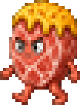
Le pilier
Il patrouille de gauche à droite. S'il repère Brad — même de dos — un point d'exclamation rouge apparaît et il fonce. Un saut suffit à l'écraser.
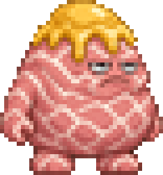
La marche mobile
Trop massif pour être écrasé. Brad se tient debout sur sa tête : l'obstacle devient une plateforme qui se déplace toute seule.
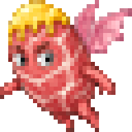
Le gêneur
Il patrouille en plein ciel, tenu par une laisse invisible autour de son point de départ. Revenir sur ses pas, c'est le retrouver là où on l'avait laissé.
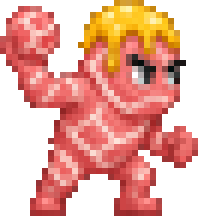
Insensible aux coups
Perché sur sa corniche, il envoie des boules de serrano et se moque des attaques de Brad. La seule réponse : attraper la boule et la lui renvoyer.
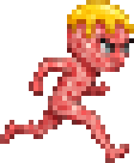
Le coureur
Il ne marche pas, il charge — et contrairement aux autres, un trou dans le sol ne l'arrête pas. Le prendre de vitesse ne suffit pas toujours.
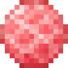
La boule de serrano. Le projectile du Lanceur — et, une fois ramassé, l'arme la plus satisfaisante du jeu.
Les « boss secondaires » reprendront cette même famille : une vague de Serra jusqu'à un exemplaire amélioré, plus résistant, avec des phases inédites entre chaque coup encaissé. D'autres variantes viendront s'ajouter au fil des niveaux.
Les niveaux
Un fondu au noir, un effet sonore, et l'extérieur devient un complexe souterrain : pas de rechargement, pas de nouvelle page. La géométrie reste continue, seule la palette bascule pendant que l'écran est masqué.

Pour profiter de l'histoire sans se battre contre des ennemis trop coriaces.
L'équilibre visé : ce que le jeu est censé être.
Le BRADDY3000 ne vous le recommande pas. Mais si vous insistez.
La difficulté agit sur la vie des ennemis et sur les dégâts subis.
L'économie
Une pièce tourne au-dessus de Brad, un son se déclenche, le compteur s'actualise dans le coin de l'écran puis s'efface. Chaque gain est écrit immédiatement dans la sauvegarde.
De quoi donner l'échelle : les 27 Serra du niveau d'introduction rapportent 54 BC, soit une amélioration et des poussières. Les Brad Coins n'achètent que des compétences. Les uniformes, eux, se débloquent en accomplissant des missions : finir un niveau, battre un nombre d'ennemis, tenir un chrono. Le joueur n'a donc jamais à choisir entre « plus fort » et « plus classe ».
La boutique
Et ça grimpe : chaque amélioration achetée renchérit la suivante de 5 BC.
Un seul achat, un effet acquis pour le reste de la partie — là où les basiques se rachètent palier après palier.
« Es-tu sûr de vouloir passer la transaction ? »
Le BRADDY3000, machine créée par Brad et apparue pour la première fois lors de l'édition Never 2 sans 3, tient le rôle de narrateur et d'assistant. Il commente ce qui se passe à l'écran — et il n'est jamais très tendre avec vos comptes.
La personnalisation
Le costard noir à cravate rouge reste la tenue de départ. Le reste se débloque en jouant : des coloris de cravate pour chaque niveau terminé, des tenues complètes pour les défis — et un uniforme doré tout au bout.
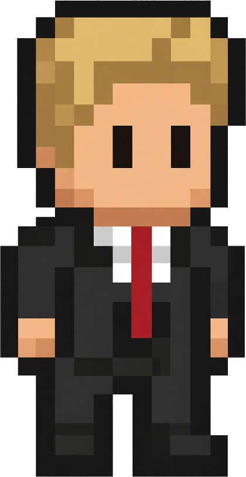
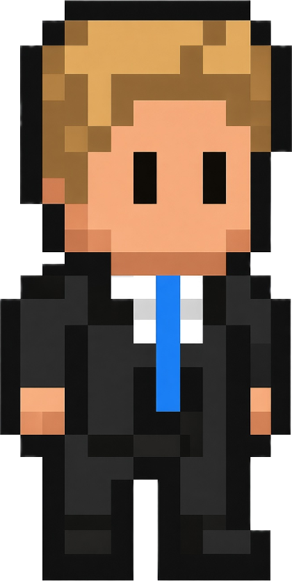
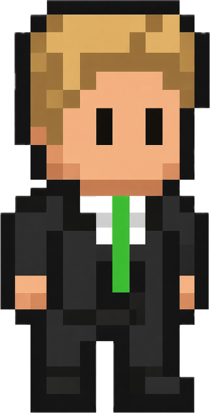
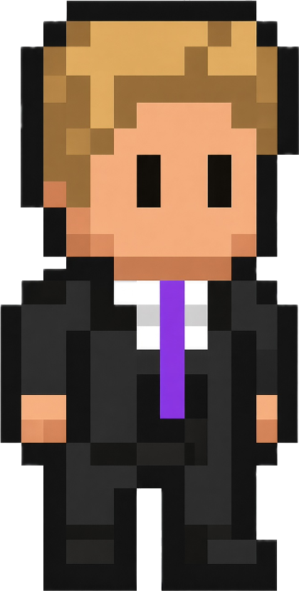
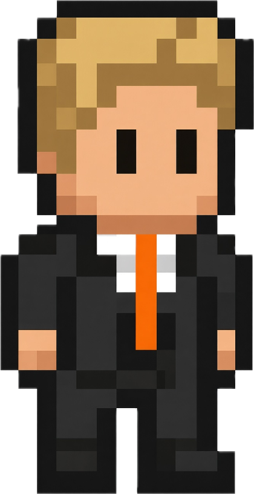
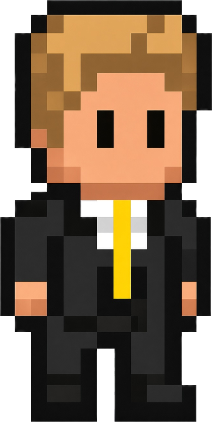
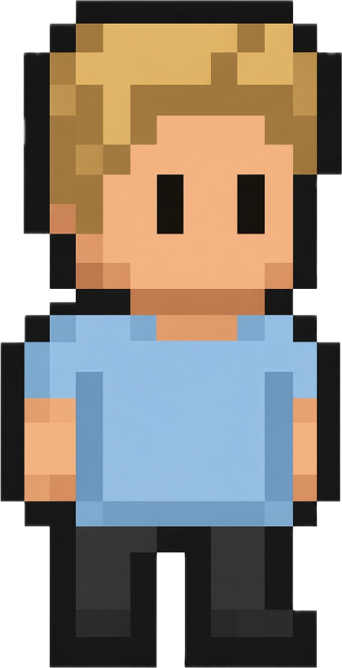
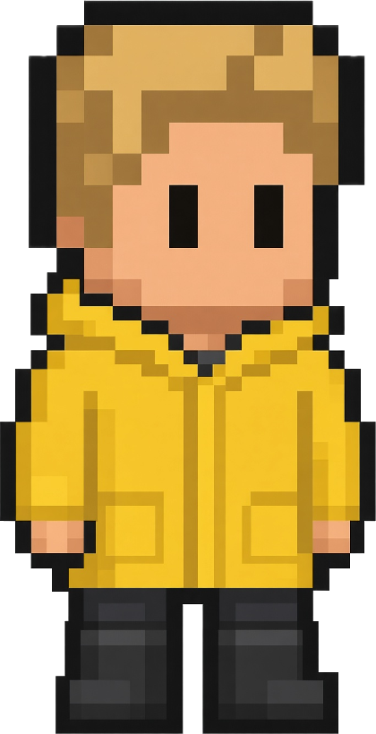
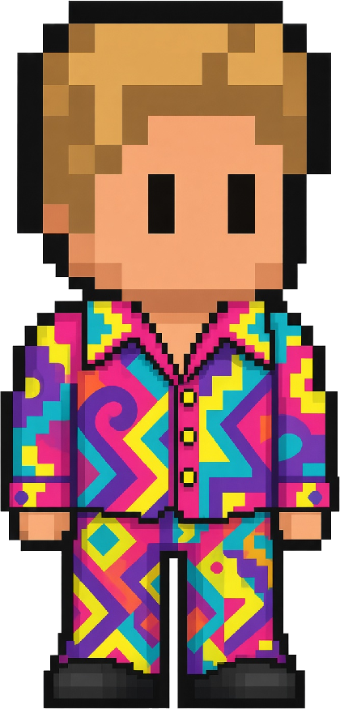
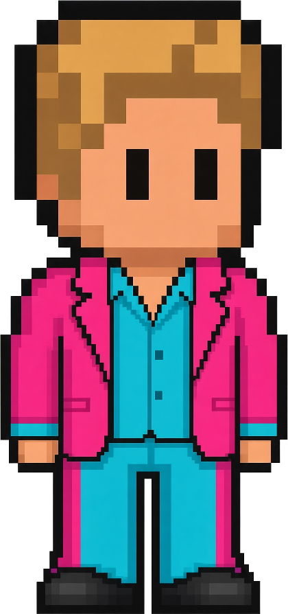
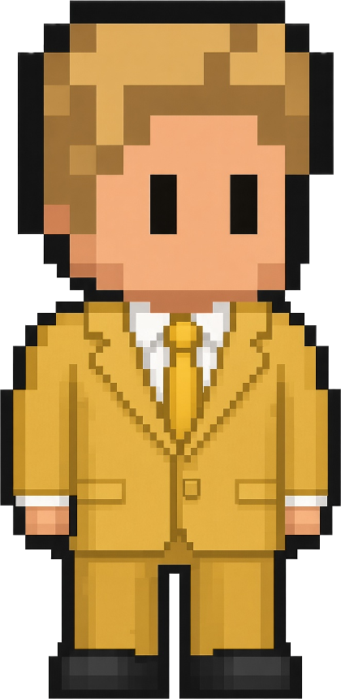
Deux familles : les recolorations, qui reprennent la même silhouette, et les tenues à part entière — manches courtes, ciré à capuche, col ouvert — qui demandent chacune leur propre planche d'animation.
Le hub
Plutôt que des boutons, une petite carte en 2D dans laquelle on dirige Brad. La boutique est un bâtiment, l'arcade est une borne, les uniformes sont une pièce. On y entre en marchant.
Trois rayons — basiques, permanentes, secrètes — et le BRADDY3000 derrière le comptoir.
Des mini-jeux volontairement familiers — un Invader, un Pac-Man — mais remixés à la sauce Brad Bitt. 1 BC tous les 100 points, avec une limite quotidienne pour éviter la ferme à pièces.
Pour essayer une amélioration avant de la sortir en niveau.
La bande-son
Les dix niveaux, le thème du boss, l'intro, le générique de Bitt et même un morceau de Noël. Dans le prototype, la musique passe par un simple élément audio pendant que les effets sont synthétisés à la volée.
Ce qui se joue déjà
Le niveau d'introduction est un vrai parcours, avec tout ce qui l'entoure : écran d'accueil, animation des studios, menu jouable, musique, sauvegarde et ligne d'arrivée.
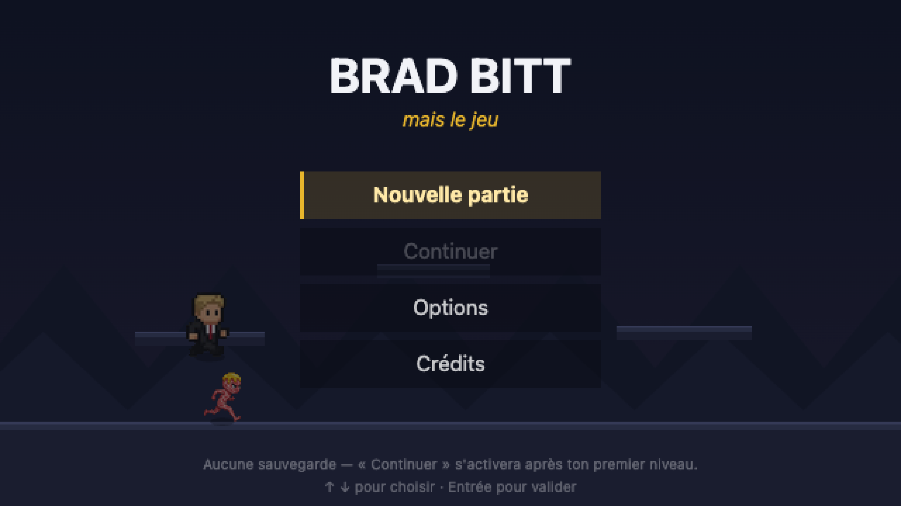
Menu principal — Brad y joue tout seulLe fond du menu n'est pas une image : Brad y joue tout seul. Des Serra entrent par les côtés, il les écrase, grimpe, puis sort son téléphone quand le calme revient.
Brad Coins, PV maximum, difficulté et temps joué sont écrits à la fin de chaque niveau — avec les champs du hub et de la boutique déjà prévus.
Le niveau se termine par une porte dans laquelle Brad entre en marchant. Rien à deviner : il finit d'y entrer tout seul, puis le bilan s'affiche.
Pensé pour être joué sur un maximum d'appareils — ordinateur et téléphone d'abord, avec le support manette envisagé plus tard.
La feuille de route
Le gros du travail est derrière. Le jeu est aujourd'hui en phase de test : optimiser ce qui doit l'être, corriger les bugs qui remontent et ajouter du contenu supplémentaire avant d'ouvrir les portes.
Niveau d'introduction complet, deux zones, 27 ennemis, menu jouable, options, sauvegarde locale et bande-son du niveau.
La construction des dix niveaux : géométrie, placement des Serra, décors qui se dégradent à mesure qu'on approche du boss.
Le hub, la phase de dialogue d'introduction, la boutique, le BRADDY3000, les uniformes en jeu, les mini-jeux et les Brad Coins secrets.
Optimiser le jeu au mieux, corriger les bugs qui remontent et ajouter du contenu supplémentaire. C'est l'étape qui sépare « ça marche » de « c'est prêt ».
Trois jours, et les trois premiers niveaux ouverts à tous. De quoi écouter ce qui remonte et corriger ce qui doit l'être avant la sortie.
La sortie officielle. Plus un « courant 2027 » vague : une date posée, et le travail organisé autour.
Rendez-vous
Et une bêta du 27 au 29 novembre 2026, en attendant.